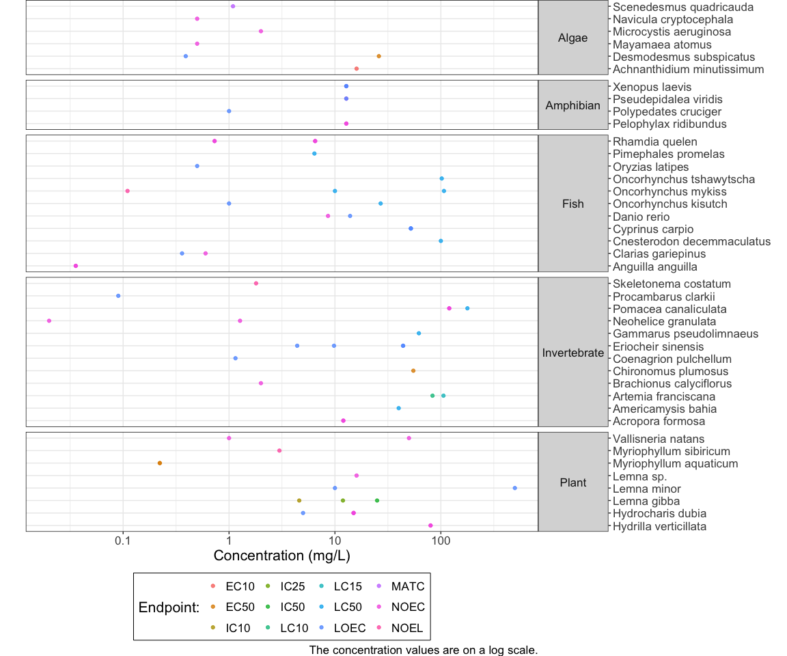

This package contains the functions and tools to generate aquatic life water quality benchmarks.
Documentation
See the package website for documentation on how to use the package.
Workflow
Create Data Set for Shiny App
The wqb_create_data_set() function will download the US EPA ECOTOX1 database, create a local .sqlite database, add other data sources and filter conditions, clean and process the data, classify the duration, standardize the effect and output the completed data set needed for the shinywqbench app. The function will create an RDS file of the data set as well. It takes a few minutes to download and create the data set.
The default argument for:
-
file_pathwill save the raw text files at"~/Ecotoxicology/ecotox". -
folder_pathwill save the .sqlite database and RDS file is at"~/Ecotoxicology/ecotox_db/". -
versionwill download the most recent version of the data set available on the website.
data_set <- wqb_create_data_set()The data set can be read in after it has been created.
data_set <- readRDS("~/Ecotoxicology/ecotox_db/ecotox_ascii_09_12_2024.rds")Generate Benchmark
set.seed(101)Deterministic Example
data <- wqb_filter_chemical(wqbenchdata::aquatic_data, "100016")
data <- wqb_benchmark_method(data)
data_agg <- wqb_aggregate(data)
data_agg <- wqb_af(data_agg)
ctv <- wqb_generate_ctv(data_agg)
ctvTo calculate the benchmark for the chemical, divide the critical toxicity value (ctv) by the assessment factors.
benchmark <- ctv / (data_agg$af_bc_species * data_agg$af_salmon * data_agg$af_planktonic * data_agg$af_variation)
benchmarkDeterministic method only generates an estimate, the lcl and ucl columns will always be blank .
# Plot data set
wqb_plot(data)
# Plot the results
wqb_plot_det(data_agg)
SSD Example
data <- wqb_filter_chemical(wqbenchdata::aquatic_data, "1071836")
data <- wqb_benchmark_method(data)
data_agg <- wqb_aggregate(data)
data_agg <- wqb_af(data_agg)
ctv <- wqb_generate_ctv(data_agg)
ctv## # A tibble: 1 × 3
## ctv_est_mg.L ctv_lcl_mg.L ctv_ucl_mg.L
## <dbl> <dbl> <dbl>
## 1 0.00981 0.00105 0.0543To calculate the benchmark for the chemical, divide the critical toxicity value (ctv) by the assessment factors.
benchmark <- ctv / (data_agg$af_bc_species * data_agg$af_salmon * data_agg$af_planktonic * data_agg$af_variation)
benchmarkSSD method can generate a lower and upper confidence interval.
# Plot data set
wqb_plot(data)
# Plot the results
fit <- wqb_ssd_fit(data_agg)
wqb_plot_ssd(data_agg, fit)
Summary Tables
wqb_summary_trophic_species(data_agg)## # A tibble: 5 × 2
## `Trophic Group` `Number of Species`
## <fct> <int>
## 1 Algae 6
## 2 Amphibian 4
## 3 Fish 11
## 4 Invertebrate 12
## 5 Plant 8
wqb_summary_trophic_groups(data_agg)## # A tibble: 4 × 2
## Consideration Result
## <chr> <chr>
## 1 Trophic group(s) Algae, Amphibian, Fish, Invertebrate, Plant
## 2 Salmonid(s) Oncorhynchus kisutch, Oncorhynchus mykiss, Oncorhynch…
## 3 Planktonic Invertebrate Artemia franciscana
## 4 B.C. species Cyprinus carpio, Lemna minor, Myriophyllum aquaticum,…
wqb_summary_af(data_agg)Developer Instructions
See the Developer Instructions on the package website for instructions on updating the reference data for the database and updating the “Add Data” template
See the README in the shinywqbench repository for instructions for updating and deploying the shiny app.
Getting Help or Reporting an Issue
To report issues, bugs or enhancements, please file an issue. Check out the support for more info.
Code of Conduct
Please note that the shinywqbench project is released with a Contributor Code of Conduct. By contributing to this project, you agree to abide by its terms.
License
The code is released under the Apache License 2.0
Copyright 2023 Province of British Columbia
Licensed under the Apache License, Version 2.0 (the “License”); you may not use this file except in compliance with the License. You may obtain a copy of the License at
https://www.apache.org/licenses/LICENSE-2.0
Unless required by applicable law or agreed to in writing, software distributed under the License is distributed on an “AS IS” BASIS, WITHOUT WARRANTIES OR CONDITIONS OF ANY KIND, either express or implied. See the License for the specific language governing permissions and limitations under the License.
Reference
- Olker, J. H., Elonen, C. M., Pilli, A., Anderson, A., Kinziger, B., Erickson, S., Skopinski, M., Pomplun, A., LaLone, C. A., Russom, C. L., & Hoff, D. (2022). The ECOTOXicology Knowledgebase: A Curated Database of Ecologically Relevant Toxicity Tests to Support Environmental Research and Risk Assessment. Environmental Toxicology and Chemistry, 41(6):1520-1539. https://doi.org/10.1002/etc.5324